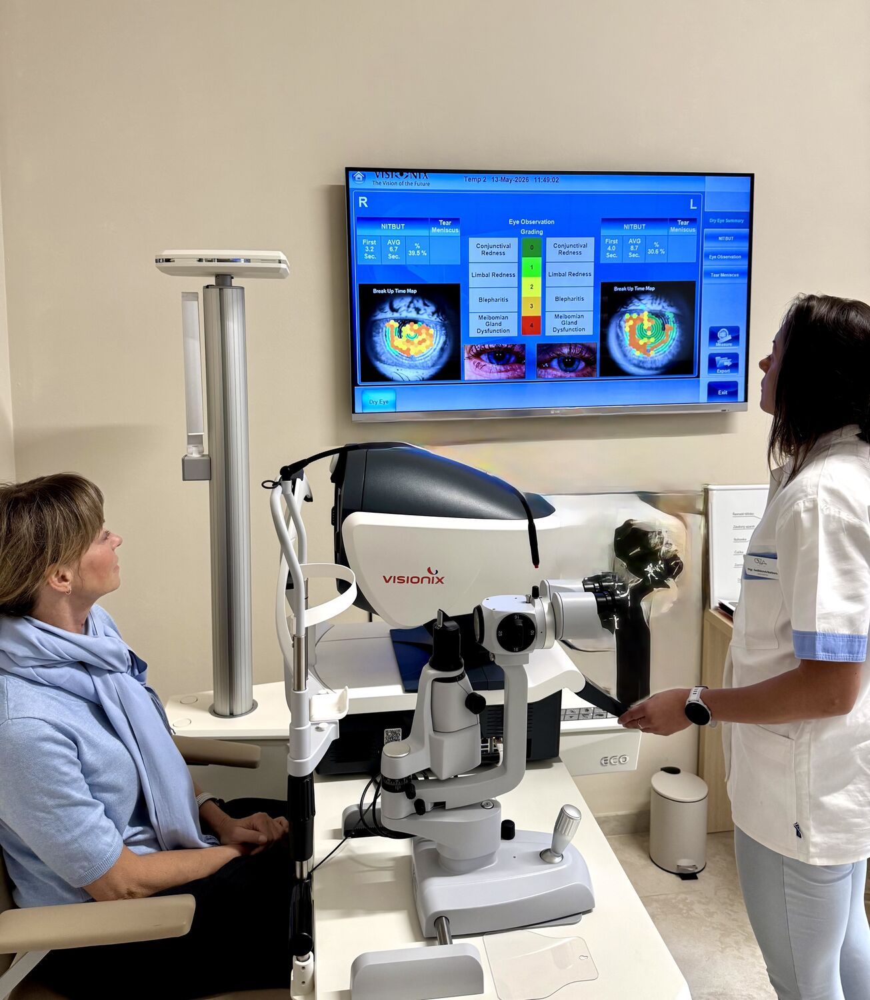

Pokud se Vaše brýle dají ještě zachránit, provedeme veškeré opravy vlastnoručně v naší dílně.
víceU nás si vyberete brýlová pouzdra, hadříky na čištěná skel, spraye proti zamlžování i okluzory pro děti.

„Byla jsem na měření a zároveň jsem si koupila brýle v optice Olzaoptic v Českém Těšíně. Chtěla jsem poděkovat za profesionální přístup jak paní optometristky tak slečny Kristínky, která mi pomohla s výběrem brýlí. Jsem opravdu spokojená. Přeji hodně spokojených zákazníků."
„V úterý jsem se byl vyměřit u paní optometristky a vybral jsem si brýle. Požádal jsem jestli by mi byli schopní udělat brýle co nejrychleji, ve středu dopoledne mi volali, že jsou brýle připravené k vyzvednutí 👍 děkuji za rychlost a vstřícnost. S brýlemi jsem velmi spokojen 🙂"
„Děkuji za profesionální a velmi příjemný průběh nákupu nových brýlí. Rovněž chci vyzdvihnout špičkovou práci paní optometristky."